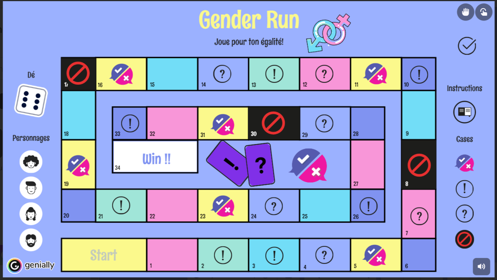

Comment jouer à notre jeu de société ?
1. A qui ce jeu est t-il destiné ?
Gender run est un jeu accessible à tous les enfants de 10 ans jusqu'à 99+ ans et de 2 à 4 personnes. C'est notamment destiné aux adolescents, aux joueurs de jeux videos et aux adultes.
Gender run est un jeu percutant où vous pourrez jouer en multijoueurs avec votre famille votre classe,vos amis etc...

2. Comment y jouer ?
Le joueur commence sur la case "Start" et lance son dé. Si la case sur laquelle il tombe est une case "!" il pioche une carte événement, si c'est une case "?" il pioche une carte choix, si c'est une case avec les symboles vrai/faux il pioche sur carte de ce même symbole ; toutes ces cartes sont réunies au centre du jeu.
Le but du jeu est d'arriver en premier.e sur la case "Win".
A droite du plateau, ces mêmes symboles pourront être retrouvés, mettez la souris dessus pour vous remémorer leur signification.
A gauche du plateau, prenez vos personnages en glissé-déposé sur le plateau et lancez votre dé en cliquant sur ce dernier au dessus des pions.
3. Les spécificités sexistes
Dans ce jeu de société: en fonction de votre genre ,il y'aura des pénalités. Les femmes rencontreront des difficultés inégales aux hommes et inversement en fonction des cartes, à vous de les découvrir !